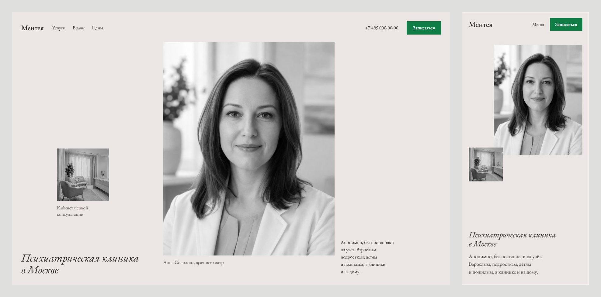
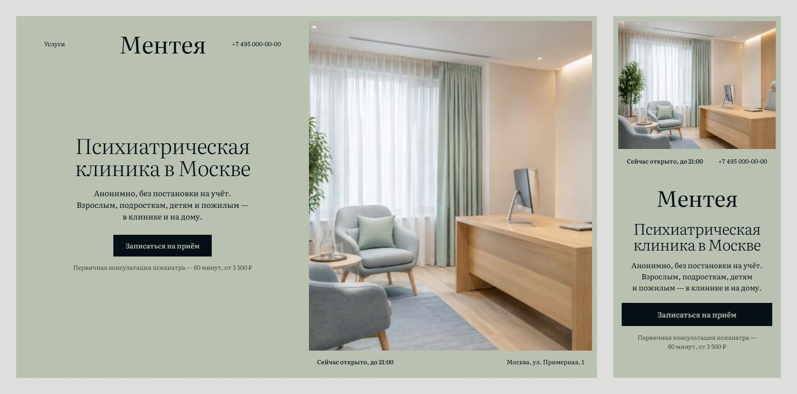
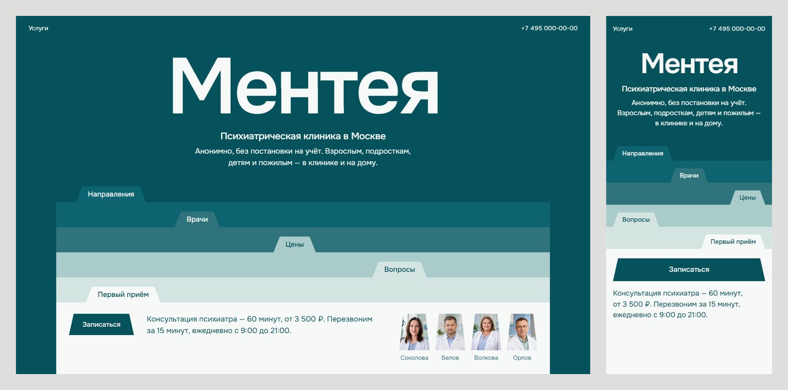

Тексты те же, что на первом сайте, оформление новое. На каждой картинке слева — компьютер, справа — телефон. Откройте вариант, чтобы посмотреть вживую и сузить окно.

Снимки как отпечатки на стене галереи: врач, к которому придёте, и кабинет, где пройдёт первая беседа. Тихо, по-журнальному, много воздуха.

Половина экрана — кабинет клиники. Он не двигается, пока вы читаете вторую половину, и свет в нём медленно меняется. На снимке — «Сейчас открыто» по московскому времени.

Одна форма на весь сайт — вкладка папки. Разделы лежат стопкой, передняя папка открыта: первый приём, цена и врачи. Самый смелый и узнаваемый вариант.